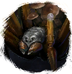

Открыть в интерактивной вики →
| Уровень | 14 |
|---|---|
| Сила (PvE) | 136 |
| Аспект | Velhar |
| Здоровье | 600 |
| Мана | 300 |
| Выносливость | 370 |
| Путь сложности | Тень |
Локация
Команда

Дроп


Умения
 Кровотечение Кровотечение — обычная атака
Кровотечение Кровотечение — обычная атака Плевок Плевок
Плевок Плевок Паника Паника
Паника Паника

Открыть в интерактивной вики →
| Уровень | 14 |
|---|---|
| Сила (PvE) | 136 |
| Аспект | Velhar |
| Здоровье | 600 |
| Мана | 300 |
| Выносливость | 370 |
| Путь сложности | Тень |
Кровотечение Кровотечение — обычная атакаПлевок ПлевокПаника Паника